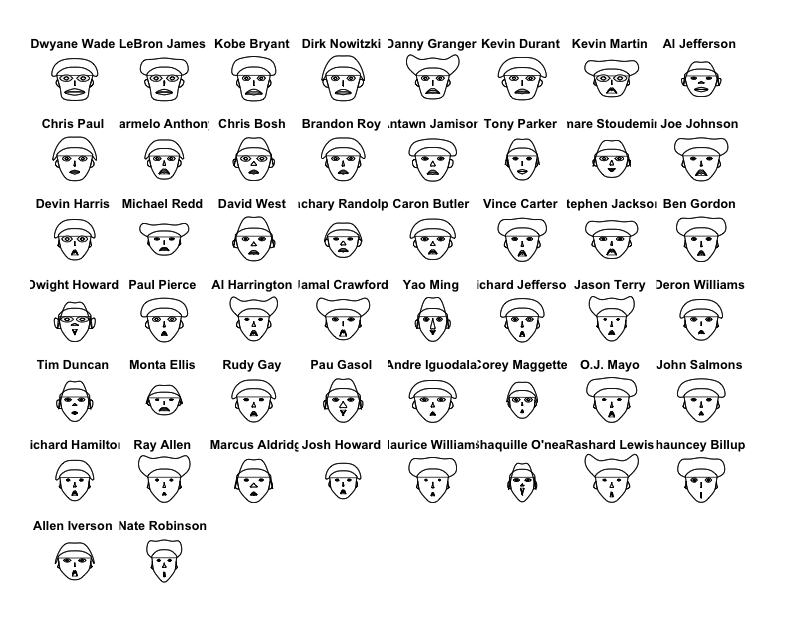
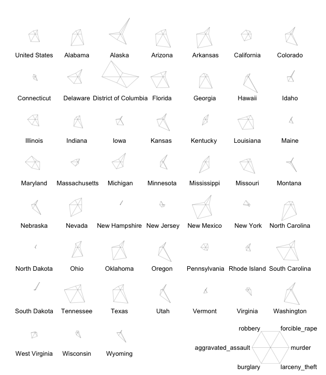

熟悉NBA的人对上面的这些名字应该不会陌生，这是份NBA球员08-09赛季前50位得分手统计信息可视化，当然图上的长相反应的是它们的数据，与真实长相无关。这张图是我用自己的电脑画的，但数据和代码来自Nathan Yau写Visualize This，一本关于数据可视化方面的好书。作者是UCLA的统计学博士，还在纽约时报、CNN、Mozilla等公司工作过，是个资深的数据迷。正好趁着自己在读这本书，把书中的趣的例子记录下来，后面会陆续加入我自己的理解。
上图叫Chernoff脸谱，大家可以自行WIKI图的由来，让我们先看看不同的脸部特征在这组数据里代表着什么：
- 脸的长度-出场次数
- 脸的宽度-平均出场时间
- 脸型-场均得分
- 嘴唇高度-场均投篮命中球数
- 嘴唇宽度-场均投篮次数
- 嘴角上扬的曲线-投篮命中率
- 眼睛高度-场均罚球命中次数
- 眼睛宽度-场均罚球数
- 头发高度-罚球命中率
- 头发宽度-场均三分球命中次数
- 发型-三分球投篮次数
- 鼻子高度-进攻篮板
- 鼻子宽度-防守篮板
- 耳朵宽度-总篮板
- 耳朵高度-总助攻
所以我们可以看到雷阿伦的头发特别宽（三分球命中高），霍华德耳朵特别宽（篮板多）。当然这种类型的图娱乐的性质大于其信息呈现。那么不防让我们再来看一张图：

这是一张关于美国犯罪率的图，数据来源和代码同样来自上面提到的书。图中每个小图代表一个州，这种画法叫Radar Chart或Spider Chart，右下角有图例，应该很容易明白什么意思。
当然，放上这两张图的目的只是个开始，希望通过自己的学习与分享让更多人感受到数据是好玩儿的。
说明：
1、这些可视化都基于R，我用的是R的一个比较好用的集成包RStudio。代码都来自于文中提到的书
2、第一个图需要基于一个开发包aplpack (由Hans Peter Wolf开发)，安装方式为打开R之后输入install.packages(aplpack), 画图代码如下：
library(aplpack) #载入这个包
bball <- read.csv("http://datasets.flowingdata.com/ppg2008.csv", header = TRUE) #读数据，数据来源于作者网站，也可下载到本地
faces(bball[, 2:16], ncolors = 0, labels = bball$Name) #aplpack提供的face()函数只支持最多15个变量，所以将集合缩小到从第2列到第16列。ncolors = 0表示用黑白图，不输的话可以看到彩色的， labels = bball$Name表示放置bball数据里Name变量名下的数据作为标签
3、第二个图代码如下：
crime <- read.csv("http://datasets.flowingdata.com/crimeRateByState-formatted.csv")
row.name(crime) <- crime$state #把第一例移动到行名称
crime <- crime[, 2:7] #选六个变量当维度
stars(crime, flip.labers = FALSE, key.loc = c(15, 1.5)) #flip.labers设置为FALSE，标签不会影响高度
作者的网站也非常有趣，提供了很多鲜活的例子。
第二个例子的数据集被作者删除了。（2014.09.30）